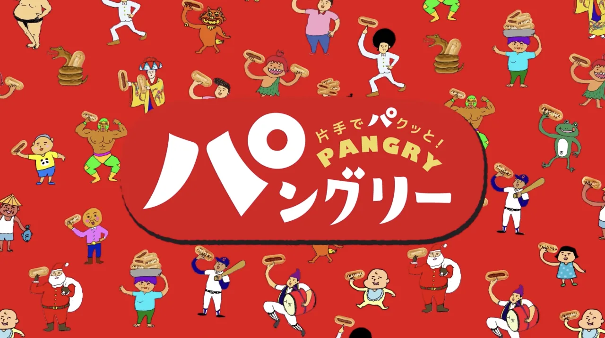
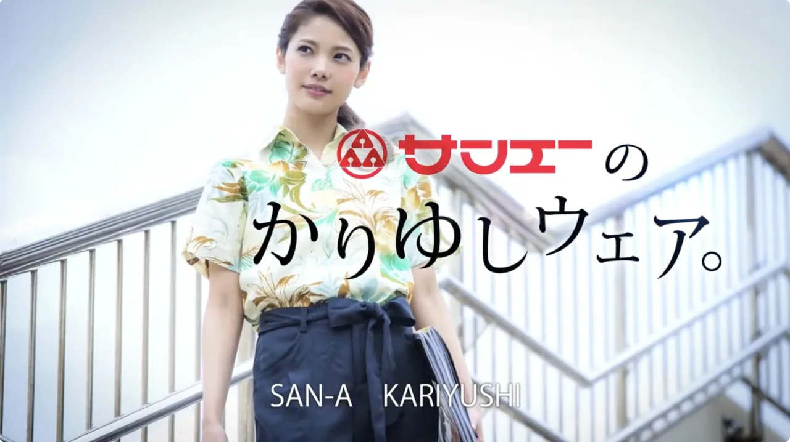
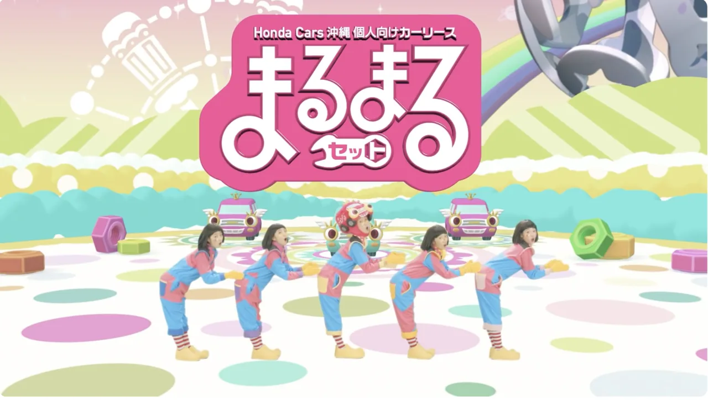

Pangry パングリー
Seen once, heard once, never forgotten.
Music for the Gushiken Pan “Minna de Pangry” TV commercial. Bronze award, TV 15-second commercial category, Okinawa Advertising Awards 2022.
CM SONG / BRONZEOKINAWA, JAPAN — SINCE 2010
A music production company in Naha, Okinawa,led by composer Raito.
Gushiken Pan “Pangry”, Okinawa Honda “Marumaru Set”.
Music heard again and again in everyday life, made in Naha, Okinawa.
Sound for everyday life, one piece at a time.
Commercial music is not background.
It is the face of a brand, remembered together with its name.

Music for the Gushiken Pan “Minna de Pangry” TV commercial. Bronze award, TV 15-second commercial category, Okinawa Advertising Awards 2022.
CM SONG / BRONZE
Commercial music for San-A’s Kariyushi Wear campaign. First produced in 2014 and later developed into new arrangements.
COMPOSITION / ARRANGEMENT
Featuring TEMPURA KIDZ; produced in full, 60-, 30- and 15-second versions. The song was also featured in a Ryukyu Shimpo newspaper series.
MUSIC / VOCAL RECORDING / MIXMore than memorable: sound that raises the value of the idea and the film, and makes the advertising itself stronger.
The production work Lisa-Rec Inc. takes on. Beyond composition, we handle recording, finishing and mastering in our own studio.
Music for TV, radio and web commercials, commercial songs, and sound logos for companies and products. We handle 15-, 30- and 60-second edits and separate instrumental and karaoke versions.
Permanent background music for commercial and tourist facilities, and music for in-house video and projection. Our credits include multichannel work such as 4.0-channel surround.
Music and sound effects for fighting games, scores and theme songs for TV anime. Since 1997 we have worked on titles distributed worldwide, including the MELTY BLOOD and UNDER NIGHT IN-BIRTH series and the TV anime SK8 the Infinity.
From selecting and booking vocalists and narrators to recording in our own studio and mixing. We also direct recordings performed by talent and cast members themselves.
Audio post-production for drama, television and corporate video, sound-effect creation and placement, and loudness adjustment. We usually work from your rough cut.
Layering AI vocals with human singing, or producing narration variations with AI voice, with commercials that have actually aired. We propose the right mix of human and AI for each purpose.
Selected; honorifics omitted
Advertisers and operators of the commercials and facilities Lisa-Rec Inc. has scored. Most work comes through advertising agencies and production companies.
The ability to communicate in one hearing, built on local commercials, and the craft to make work that is loved for years. Both are the strength of Lisa-Rec’s sound.
Composer Raito (来兎, real name Masaru Kuba) was born in Okinawa City. He started making music on a computer in elementary school, founded a game-development circle with friends at a technical college, and began composing game music professionally in 1997 before moving to Tokyo in 2001.
He wrote the sound of the fighting-game series MELTY BLOOD, then broadened his work to titles released in Japan and abroad, including the UNDER NIGHT IN-BIRTH series and the TV anime SK8 the Infinity, covering theme songs, scores, sound effects and songs for artists.
He returned to Okinawa in 2009 and founded Lisa-Rec Inc. in 2010. Based in Naha, he now brings the pop, catchy writing honed in game music to commercials, sound logos, music for facilities and spaces, and music editing and sound design for VR live events.
In no particular order; honorifics omitted. All commercial music, sound logos and music for spaces listed here was composed and produced by Raito (Masaru Kuba).
Sound designed to be remembered in fifteen seconds, worked back from the idea behind the campaign. More than 150 commercials and sound logos from 2010 to 2026. Every piece listed here was composed and produced by our founder, composer Raito (Masaru Kuba). Titles are shown in Japanese as credited.
Music for the time people spend in a place: surround music for theatres, outdoor events, and VR and metaverse spaces, designed as an experience.
The MELTY BLOOD and UNDER NIGHT IN-BIRTH series, the TV anime SK8 the Infinity and more. Raito’s game and anime music reaches players and fans worldwide.
Full works index on Raito.studio ↗
Every one of the 150+ commercials and sound logos produced by Lisa-Rec Inc. from 2010 to 2026 was composed and produced by our founder and CEO, composer Raito (来兎, real name Masaru Kuba), the same Raito known for the game music of MELTY BLOOD and UNDER NIGHT IN-BIRTH.
We keep to projects where we are involved from the planning stage. As a rule we do not take part in competitive bids or pitches.
International inquiries and work for overseas releases are handled through Raito.studio, the English site of our founder, composer Raito. He has scored fighting games and TV anime distributed worldwide and works in English. Lisa-Rec Inc. (this site) handles work within Japan.
Sound logos and commercial tracks start from 300,000 yen. The fee depends on vocalists, recording attendance, additional edits and the scope of use. We quote after hearing about the project.
Two to three weeks for a sound logo and three weeks to a month for a commercial track are standard. Ask us about rush work. We schedule backwards from the air date.
Yes. We accept work through advertising agencies and video production companies, and directly from businesses. Either way, we start by understanding the intent of the campaign.
Yes. We are based in Naha, Okinawa, and work continuously with game, anime and advertising companies in Tokyo. Everything from meetings to delivery can be done online.
Yes. We select and book vocalists and narrators to suit the track, record in our own studio and mix. We also direct recordings sung by talent and cast members themselves.
Yes. Commercials that layer AI vocals with human singing have aired, and we also produce narration variations with AI voice. We propose the right balance between the qualities only a human voice has and the advantages of AI.
Yes. We handle audio post-production for drama, television and corporate video, the creation and placement of sound effects, and loudness adjustment, usually working from your rough cut.
For international projects, please write to Raito.studio.